Section 2 Data Load and Methods Explore
In this section we’ll review the packages we’ll be using to process and evaluate the lidar data. None of the analysis is happening here, just reviewing the methodologies.
Load the standard libraries
# bread-and-butter
library(tidyverse) # the tidyverse
library(viridis) # viridis colors
library(harrypotter) # hp colors
library(RColorBrewer) # brewer colors
library(scales) # work with number and plot scales
library(latex2exp)
# visualization
library(mapview) # interactive html maps
library(kableExtra) # tables
library(patchwork) # combine plots
library(ggnewscale) # ggnewscale
library(plot3D) # 3d plotting
library(rgl) # rgl plotting
# spatial analysis
library(terra) # raster
library(sf) # simple features
library(lidR) # lidar data
# models
library(brms) # bayesian modelling
# utilities
library(rvest) # web scrapingLoad the libraries from GitHub. Here we’ll load:
NeonTreeEvaluation: benchmark data set to evaluate lidar-based tree detection (Weinstein et al. 2021)cloud2trees: routines for processing point cloud data collected by airborne lidar to detect forest trees (Woolsey and Tinkham, 2024)LadderFuelsR: vertical fuel continuity quantification and crown base height (CBH) calculation (Viedma et al. 2024)lasR: complex processing pipelines on lidar data (Roussel 2024)leafR: set of functions for analyzing the ecological structure of forests based on LAI and LAD measures derived from LiDAR data (Roussel 2024). Data from this package used in theLadderFuelsRworkflow even though this process is never explained by Viedma et al. 2024.
library(pak)
# load them
c("NeonTreeEvaluation", "cloud2trees", "LadderFuelsR", "lasR", "leafR") %>%
# install and load
purrr::map(function(x){
# locations
df <- dplyr::tibble(
p = c("NeonTreeEvaluation", "cloud2trees", "LadderFuelsR", "lasR", "leafR")
, l = c(
"weecology/NeonTreeEvaluation_package"
, "georgewoolsey/cloud2trees"
, "olgaviedma/LadderFuelsR"
, "r-lidar/lasR"
, "DRAAlmeida/leafR"
)
)
# install if needed
if(!require(x, character.only = T)){
pak::pkg_install(
pkg = df %>% dplyr::filter(tolower(p)==tolower(x)) %>% dplyr::pull(l)
, upgrade = T
)
}
# load
library(x, character.only = T)
})2.1 NeonTreeEvaluation
Weinstein et al. (2021) developed:
a benchmark dataset of individual canopy crowns derived from multi-sensor imagery in the National Ecological Observatory Network (Table 1) that provides: 1) co-registered remote sensing data from multiple sensors (LiDAR, RGB imagery, and hyperspectral imagery) to allow comparisons of methods based on any single sensor (e.g., for LiDAR based methods), or any combination of sensors (e.g., combining RGB and hyperspectral), and 2) three types of evaluation data to allow assessing both ‘tree detection’, defined as the identifying the location of individual trees using evaluation data with a point at the crown center , and ‘crown delineation’ defined as identifying the boundary edge of crowns across a broad range of forest types. The benchmark is designed to allow flexibility in both workflow and sensor selection. (p. 2)
Table 1. Summary of datasets included in the benchmark dataset. All sensor data has been cropped to the extent of NEON field sampling plots.

The objective of the present analysis is to evaluate the use of this benchmark data set (Weinstein et al. 2021) for a scientific publication describing a workflow to ingest raw LiDAR data and export a tabular tree list for use as an input to the QUIC-Fire physics-based fire spread model (Linn et al. 2020).
Weinstein et al. (2021) describe the LiDAR data in the benchmark data set:
The LiDAR data are 3D coordinates (~5 points/m2) that provide high resolution information about canopy crown shape and height. LiDAR data are stored as 1000m x 1000m.laz files (Fig 2). These files contain the x,y,z coordinates for each return, as well as metadata on return intensity and point classification. Boundaries of individual canopy crowns are often apparent due to gaps among neighboring trees or differences in height among overlapping canopy crowns. For more information on NEON LiDAR data processing see NEON technical document NEON.DOC.001292. Due to the large spatial coverage of the collection effort, the point density of the NEON LiDAR clouds is much lower than the point density used for most studies of crown detection models ([20, 21]; point densities of 8–1000 pt/m2). (p. 4)
what’s in this package?
## boxes_to_spatial_polygons : function (boxes, raster_object, project_boxes = TRUE)
## canopy_model : function (las, res = 0.5)
## check_download : function ()
## compute_precision_recall : function (ground_truth, predictions, threshold = 0.4, summarize = TRUE)
## download : function (training = FALSE, savedir = NULL, force = F)
## evaluate_field_crowns : function (predictions, summarize = TRUE, show = TRUE, project = FALSE)
## evaluate_field_stems : function (predictions, project = TRUE, show = T, summarize = T)
## evaluate_image_crowns : function (predictions, project = FALSE, show = TRUE, summarize = TRUE)
## field_crowns : function (x, show = TRUE, project_boxes = TRUE)
## get_data : function (plot_name, type)
## grand_summary : function (results, threshold = 0.4)
## image_crowns : function (predictions, show = TRUE, project_boxes = TRUE)
## list_annotations : function ()
## list_chm : function ()
## list_field_crowns : function ()
## list_field_stems : function ()
## list_rgb : function ()
## load_field_crown : function (plot_name, show = TRUE)
## load_ground_truth : function (plot_name, show = TRUE)
## xml_parse : function (path)
## zenodo_url : function (concept_rec_id = 3723356, rec_version = "latest", rec_id = NULL)
## zenodo_versions : function (concept_rec_id, arg_checks = TRUE)we first have to download evaluation data from the Zenodo archive (1GB), use the download() function to place the data in the correct package location. Download the much larger training data, set training=TRUE.
## NULLwhat data is in this package?
# what/where is this data
paste0(system.file(package = "NeonTreeEvaluation"),"/extdata/") %>%
list.files(recursive = T, pattern = ".*\\.(laz|las)$", full.names = F) %>%
sample() %>%
.[1:10]## [1] "NeonTreeEvaluation/evaluation/LiDAR/BONA_023_2019.laz"
## [2] "NeonTreeEvaluation/evaluation/LiDAR/RMNP_003_2018.laz"
## [3] "NeonTreeEvaluation/evaluation/LiDAR/SJER_055_2018.laz"
## [4] "NeonTreeEvaluation/evaluation/LiDAR/BLAN_012_2019.laz"
## [5] "NeonTreeEvaluation/evaluation/LiDAR/MOAB_028_2019.laz"
## [6] "NeonTreeEvaluation/evaluation/LiDAR/YELL_023_2020.laz"
## [7] "NeonTreeEvaluation/evaluation/LiDAR/unnamed_plot_89.las"
## [8] "NeonTreeEvaluation/evaluation/LiDAR/CLBJ_040_2019.laz"
## [9] "NeonTreeEvaluation/evaluation/LiDAR/OSBS_015_2019.laz"
## [10] "NeonTreeEvaluation/evaluation/LiDAR/TALL_012_2019.laz"For a list of NEON site abbreviations https://www.neonscience.org/field-sites/field-sites-map
NeonTreeEvaluation::list_annotations looks into package contents for ground truth annotations for the image-annotated crowns.
## [1] "OSBS_037_2019"
## [2] "OSBS_029_2019"
## [3] "2018_SJER_3_253000_4105000_image_72"
## [4] "2018_TEAK_3_319000_4095000_image_175"
## [5] "2018_SJER_3_252000_4108000_image_517"
## [6] "SJER_015_2018"
## [7] "WREF_072_2019"
## [8] "DSNY_025_2018"
## [9] "SCBI_046_2019"
## [10] "DELA_047_2019"The field collected stems are individual points for each tree. They overlap with a subset of the sensor data. Use the NeonTreeEvaluation::list_field_stems function to determine which plots have stem data.
## [1] "DELA_052" "GUAN_006" "LENO_008" "SERC_056" "SOAP_052" "MLBS_005"
## [7] "RMNP_005" "TALL_001" "DELA_015" "BART_074"The NeonTreeEvaluation::crown_polygons function lists “field-annotated crowns” in which an observer annotates a polygon on the remote-sensing image on a tablet while standing in the field. From Ordway Swisher Biological Station, Florida and Mountain Lake Biological Station.
## Rows: 564## Columns: 7
## $ indvdID <chr> "MLBSE00007", "MLBSE00012", "MLBSE00027", "MLBSE00049", "…
## $ geometry <POLYGON [m]> POLYGON ((541983.5 4136174,..., POLYGON ((542127 …
## $ plotID <fct> MLBS_14, MLBS_37, MLBS_42, MLBS_1, MLBS_21, MLBS_23, MLBS…
## $ siteID <fct> MLBS, MLBS, MLBS, MLBS, MLBS, MLBS, MLBS, MLBS, MLBS, MLB…
## $ utmZone <fct> 17N, 17N, 17N, 17N, 17N, 17N, 17N, 17N, 17N, 17N, 17N, 17…
## $ plotEasting <dbl> 541986.3, 542125.7, 542267.8, 541883.4, 542053.1, 542075.…
## $ plotNorthing <dbl> 4136173, 4136182, 4136994, 4136586, 4136390, 4136400, 413…Sites with field annotated crowns
# crown_polygons
NeonTreeEvaluation::crown_polygons %>%
sf::st_drop_geometry() %>%
dplyr::count(siteID)## # A tibble: 2 × 2
## siteID n
## <fct> <int>
## 1 MLBS 106
## 2 OSBS 458hmmm this data only exists for two NEON sites
The woody vegetation structure data contains information on field estimated height and maximum crown diameter for the majority of field collected stems. We annotated all trees in the 40x40 m plot, regardless of health status, provided they were visible in the image.
## Rows: 37,776
## Columns: 67
## $ uid <fct> 411f5c60-79c4-41ef-b3d0-4e9b5365870e, 0d…
## $ namedLocation <fct> ABBY_063.basePlot.vst, ABBY_063.basePlot…
## $ date <fct> 2015-07-23, 2015-07-23, 2015-07-23, 2015…
## $ tagEventID <fct> vst_ABBY_2015, vst_ABBY_2015, vst_ABBY_2…
## $ domainID <fct> D16, D16, D16, D16, D16, D16, D16, D16, …
## $ siteID <fct> ABBY, ABBY, ABBY, ABBY, ABBY, ABBY, ABBY…
## $ plotID <fct> ABBY_063, ABBY_063, ABBY_063, ABBY_063, …
## $ subplotID <int> 39, 21, 21, 21, 39, 39, 39, 39, 39, 39, …
## $ nestedSubplotID <int> NA, NA, NA, NA, NA, NA, NA, NA, NA, NA, …
## $ pointID <int> 57, 21, 21, 21, 39, 41, 41, 41, 41, 41, …
## $ stemDistance <dbl> 3.0, 23.8, 23.8, 23.8, 26.2, 16.0, 16.0,…
## $ stemAzimuth <dbl> 111.0, 50.0, 50.0, 50.0, 45.4, 346.0, 34…
## $ recordType <fct> , , , , , , , , , , , , , , , , , , , , …
## $ individualID <fct> NEON.PLA.D16.ABBY.00441, NEON.PLA.D16.AB…
## $ supportingStemIndividualID <fct> NA, NA, NA, NA, NA, NA, NA, NA, NA, NA, …
## $ previouslyTaggedAs <fct> NA, NA, NA, NA, NA, NA, NA, NA, NA, NA, …
## $ samplingProtocolVersion <fct> NEON.DOC.000987vE, NEON.DOC.000987vE, NE…
## $ taxonID <fct> PSMEM, PSMEM, PSMEM, PSMEM, PSMEM, PSMEM…
## $ scientificName <fct> "Pseudotsuga menziesii (Mirb.) Franco va…
## $ taxonRank <fct> variety, variety, variety, variety, vari…
## $ identificationReferences <lgl> NA, NA, NA, NA, NA, NA, NA, NA, NA, NA, …
## $ morphospeciesID <fct> NA, NA, NA, NA, NA, NA, NA, NA, NA, NA, …
## $ morphospeciesIDRemarks <fct> NA, NA, NA, NA, NA, NA, NA, NA, NA, NA, …
## $ identificationQualifier <fct> , , , , , , , , , , , , , , , , , , , , …
## $ remarks <fct> "", "", "", "", "", "corrected using 201…
## $ measuredBy <fct> krian@neoninc.org, krian@neoninc.org, kr…
## $ recordedBy <fct> kzias@field-ops.org, kzias@field-ops.org…
## $ dataQF <fct> NA, NA, NA, NA, NA, NA, NA, NA, NA, NA, …
## $ plotType <fct> tower, tower, tower, tower, tower, tower…
## $ subtype <fct> basePlot, basePlot, basePlot, basePlot, …
## $ plotLatitude <dbl> 45.76074, 45.76037, 45.76037, 45.76037, …
## $ plotLongitude <dbl> -122.3303, -122.3303, -122.3303, -122.33…
## $ datum <fct> WGS84, WGS84, WGS84, WGS84, WGS84, WGS84…
## $ utmZone <fct> 10N, 10N, 10N, 10N, 10N, 10N, 10N, 10N, …
## $ plotEasting <dbl> 552081.2, 552079.1, 552079.1, 552079.1, …
## $ plotNorthing <dbl> 5067683, 5067642, 5067642, 5067642, 5067…
## $ horzUncert <dbl> 0.10, 0.10, 0.10, 0.10, 0.10, 0.10, 0.10…
## $ crdSource <fct> Geo 7X, Geo 7X, Geo 7X, Geo 7X, Geo 7X, …
## $ elevation <dbl> 363.22, 362.29, 362.29, 362.29, 362.34, …
## $ vertUncert <dbl> 0.10, 0.10, 0.10, 0.10, 0.10, 0.10, 0.10…
## $ nlcdClass <fct> evergreenForest, evergreenForest, evergr…
## $ appMods <fct> bbc|bgc|cdw|cfc|dhp|hbp|ltr|sme|vst, bbc…
## $ geometry <fct> "c(-122.330278, 45.76074)", "c(-122.3303…
## $ itcEasting <dbl> 552084.0, 552097.3, 552097.3, 552097.3, …
## $ itcNorthing <dbl> 5067682, 5067657, 5067657, 5067657, 5067…
## $ itcLongitude <dbl> -122.3302, -122.3301, -122.3301, -122.33…
## $ itcLatitude <dbl> 45.76073, 45.76051, 45.76051, 45.76051, …
## $ eventID <fct> vst_ABBY_2015, vst_ABBY_2016, vst_ABBY_2…
## $ tempShrubStemID <lgl> NA, NA, NA, NA, NA, NA, NA, NA, NA, NA, …
## $ tagStatus <fct> NA, ok, ok, ok, NA, NA, ok, ok, ok, NA, …
## $ growthForm <fct> single bole tree, single bole tree, sing…
## $ plantStatus <fct> "Standing dead", "Standing dead", "Dead,…
## $ stemDiameter <dbl> 40.0, 90.0, 89.1, 88.3, 105.0, 28.3, 29.…
## $ measurementHeight <int> 130, 130, 130, 130, 130, 130, 140, 130, …
## $ height <dbl> NA, 7.5, 6.7, 6.8, NA, NA, NA, 22.5, 21.…
## $ baseCrownHeight <dbl> NA, NA, NA, NA, NA, NA, NA, NA, NA, NA, …
## $ breakHeight <dbl> NA, NA, NA, 6.8, NA, NA, NA, NA, NA, NA,…
## $ breakDiameter <dbl> NA, NA, 61, NA, NA, NA, NA, NA, NA, NA, …
## $ maxCrownDiameter <dbl> NA, NA, NA, NA, NA, NA, NA, NA, NA, NA, …
## $ ninetyCrownDiameter <dbl> NA, NA, NA, NA, NA, NA, NA, NA, NA, NA, …
## $ canopyPosition <fct> NA, , NA, NA, NA, NA, , NA, NA, NA, , NA…
## $ shape <fct> , , , , , , , , , , , , , , , , , , , , …
## $ basalStemDiameter <dbl> NA, NA, NA, NA, NA, NA, NA, NA, NA, NA, …
## $ basalStemDiameterMsrmntHeight <int> NA, NA, NA, NA, NA, NA, NA, NA, NA, NA, …
## $ maxBaseCrownDiameter <dbl> NA, NA, NA, NA, NA, NA, NA, NA, NA, NA, …
## $ ninetyBaseCrownDiameter <dbl> NA, NA, NA, NA, NA, NA, NA, NA, NA, NA, …
## $ area <dbl> NA, NA, NA, NA, NA, NA, NA, NA, NA, NA, …Nice, there appears to be some useful data in here: uid, siteID, plotID, stemDiameter, height, maxCrownDiameter, ninetyCrownDiameter, baseCrownHeight, plantStatus, taxonID
Also, I just found that there is a hidden function in the package to filter the field tree data
…except for I’m going to change the minimum diameter from 15 cm to 10 cm
clean_field_data<-function(field){
field$area<-field$maxCrownDiameter*field$ninetyCrownDiameter
field<-field %>% filter(!is.na(itcEasting),!stringr::str_detect(eventID,"2014"),growthForm %in% c("single bole tree","multi-bole tree","small tree","sapling"),stemDiameter>10) %>%
droplevels() %>%
filter(height>3|is.na(height))
#Limit difference in heights
to_remove<-field %>% group_by(individualID) %>%
summarize(mean=mean(height),sum_difference = abs(sum(diff(height)))) %>%
filter(sum_difference > 8)
field<-field %>%
filter(!individualID %in% to_remove$individualID)
}clean this data and filter it
# filter it
field_trees <- NeonTreeEvaluation::field %>%
clean_field_data() %>%
dplyr::select(
uid, siteID, plotID, stemDiameter
, height, maxCrownDiameter, ninetyCrownDiameter
, baseCrownHeight, plantStatus, taxonID
) %>%
dplyr::filter(!is.na(maxCrownDiameter) & !is.na(height)) %>%
dplyr::mutate(CrownRadius = maxCrownDiameter/2)
# see it
field_trees %>% dplyr::glimpse()## Rows: 6,878
## Columns: 11
## $ uid <fct> b4305401-a7d9-4e79-afc4-a7f0c82e98d3, 346b66a5-cd8…
## $ siteID <fct> ABBY, ABBY, ABBY, ABBY, ABBY, ABBY, ABBY, ABBY, AB…
## $ plotID <fct> ABBY_007, ABBY_007, ABBY_007, ABBY_007, ABBY_007, …
## $ stemDiameter <dbl> 68.2, 54.1, 54.7, 58.0, 68.1, 20.2, 15.6, 19.6, 18…
## $ height <dbl> 49.6, 13.1, 22.9, 35.6, 50.2, 19.0, 10.8, 12.5, 9.…
## $ maxCrownDiameter <dbl> 9.7, 3.2, 9.1, 9.5, 11.3, 8.6, 4.5, 4.7, 5.2, 4.3,…
## $ ninetyCrownDiameter <dbl> 8.5, 0.0, 7.8, 7.9, 6.7, 7.6, 4.2, 4.5, 4.8, 3.8, …
## $ baseCrownHeight <dbl> NA, NA, NA, NA, NA, NA, NA, NA, NA, NA, NA, NA, NA…
## $ plantStatus <fct> "Live", "Dead, broken bole", "Live", "Live", "Live…
## $ taxonID <fct> PSMEM, PSMEM, PSMEM, PSMEM, PSMEM, PSMEM, PSMEM, P…
## $ CrownRadius <dbl> 4.85, 1.60, 4.55, 4.75, 5.65, 4.30, 2.25, 2.35, 2.…what are these data?
## stemDiameter height maxCrownDiameter ninetyCrownDiameter
## Min. : 15.10 Min. : 3.10 Min. : 0.100 Min. : 0.000
## 1st Qu.: 18.60 1st Qu.: 9.90 1st Qu.: 3.800 1st Qu.: 2.900
## Median : 23.30 Median :13.30 Median : 6.200 Median : 4.700
## Mean : 27.44 Mean :14.97 Mean : 6.975 Mean : 5.296
## 3rd Qu.: 31.80 3rd Qu.:18.90 3rd Qu.: 9.200 3rd Qu.: 7.000
## Max. :255.00 Max. :52.90 Max. :62.000 Max. :31.000
## NA's :115
## baseCrownHeight CrownRadius
## Min. : NA Min. : 0.050
## 1st Qu.: NA 1st Qu.: 1.900
## Median : NA Median : 3.100
## Mean :NaN Mean : 3.487
## 3rd Qu.: NA 3rd Qu.: 4.600
## Max. : NA Max. :31.000
## NA's :6878status?
## plantStatus n
## 1 Dead, broken bole 75
## 2 Downed 2
## 3 Live 5486
## 4 Live, other damage 135
## 5 Live, broken bole 43
## 6 Live, disease damaged 199
## 7 Live, insect damaged 157
## 8 Live, physically damaged 154
## 9 No longer qualifies 12
## 10 Removed 1
## 11 Standing dead 614keep only live
field_trees <- field_trees %>%
dplyr::filter(plantStatus %>% tolower() %>% stringr::str_starts("live"))taxonID?
## taxonID n
## 1 PICOL 535
## 2 PIEN 500
## 3 ACRU 367
## 4 ABLAL 333
## 5 LITU 270
## 6 QURU 267
## 7 LIST2 238
## 8 TSCA 211
## 9 QUAL 197
## 10 PIPA2 177
## 11 ACSA3 137
## 12 PIFL2 132
## 13 OXYDE 117
## 14 PSMEM 96
## 15 PITA 95
## 16 PSME 91
## 17 CATO6 88
## 18 PIMA 84
## 19 POTR5 81
## 20 JUNIP 80let’s see the height versus diameter relationship
field_trees %>%
ggplot(mapping = aes(x = height, y = stemDiameter)) +
geom_point() +
scale_x_continuous(limits = c(0,NA)) +
scale_y_continuous(limits = c(0,NA)) +
theme_light()let’s get conifer trees only???
….sure, i found a NEON plant list with the codes: https://data.neonscience.org/taxonomic-lists?taxonTypeCode=PLANT
conifer_spp <-
readr::read_csv(
"../data/OS_TAXON_PLANT-20220330T142149.csv"
, show_col_types = F
, progress = F
) %>%
dplyr::filter(
tolower(family) %in% c(
"pinaceae", "podocarpaceae", "araucariaceae"
, "taxaceae", "cephalotaxaceae", "taxodiaceae", "cupressaceae"
)
) %>%
dplyr::mutate(
taxonID = toupper(taxonID)
, vernacularName = tolower(vernacularName)
, genus = stringr::str_to_title(genus)
) %>%
dplyr::distinct(taxonID, vernacularName, genus)
# huh?
conifer_spp %>% dplyr::slice_sample(n = 10)## # A tibble: 10 × 3
## taxonID vernacularName genus
## <chr> <chr> <chr>
## 1 TAAS pond cypress Taxodium
## 2 PIWA3 bhutan pine Pinus
## 3 ABIESSPP fir Abies
## 4 HEAB2 santa cruz cypress Hesperocyparis
## 5 HEFO10 tecate cypress Hesperocyparis
## 6 PODOCA <NA> <NA>
## 7 TSCA2 carolina hemlock Tsuga
## 8 TORRESPP torreya Torreya
## 9 ABAM pacific silver fir Abies
## 10 PITOI santa cruz island torrey pine Pinusfilter that field tree list for conifers
check those conifers height and diameter
conifer_trees %>%
ggplot(mapping = aes(x = height, y = stemDiameter, color = genus)) +
geom_point() +
scale_x_continuous(limits = c(0,NA)) +
scale_y_continuous(limits = c(0,NA)) +
facet_wrap(facets = dplyr::vars(genus)) +
scale_color_viridis_d(option = "turbo") +
theme_light() +
theme(legend.position = "none")
what about this crown area data?
conifer_trees %>%
ggplot(mapping = aes(x = CrownRadius, y = genus, fill = genus)) +
geom_boxplot(width = 0.7, outliers = F) +
scale_fill_viridis_d(option = "turbo") +
theme_light() +
theme(legend.position = "none")radius data
## 1% 5% 50% 95% 99%
## 3.500 5.600 11.500 25.210 41.753## 1% 5% 50% 95% 99%
## 0.8500 1.1000 2.0000 5.1000 6.6255let’s model crown radius based on height
lm(formula = CrownRadius ~ height, data = conifer_trees) %>%
broom::tidy() %>%
kableExtra::kbl(digits = 4) %>%
kableExtra::kable_styling()| term | estimate | std.error | statistic | p.value |
|---|---|---|---|---|
| (Intercept) | 1.0900 | 0.0464 | 23.5090 | 0 |
| height | 0.1014 | 0.0032 | 31.7895 | 0 |
plot this
conifer_trees %>%
ggplot(mapping = aes(x = height, y = CrownRadius)) +
geom_point() +
geom_smooth(method = "lm") +
scale_x_continuous(limits = c(0,NA)) +
scale_y_continuous(limits = c(0,NA)) +
theme_light() +
theme(legend.position = "none")
what about a non-linear model?
crown_height_model <- brms::brm(
formula = brms::bf(
formula = CrownRadius ~ (b1 * height) + height^b2
, b1 + b2 ~ 1
, nl = TRUE # !! specify non-linear
)
, data = conifer_trees
, family = brms::brmsfamily("Gamma")
, iter = 6000, warmup = 3000, chains = 4
, cores = lasR::half_cores()
, file = "../data/crown_height_model"
)
# plot(crown_height_model)
summary(crown_height_model)## Family: gamma
## Links: mu = log; shape = identity
## Formula: CrownRadius ~ (b1 * height) + height^b2
## b1 ~ 1
## b2 ~ 1
## Data: conifer_trees (Number of observations: 2750)
## Draws: 4 chains, each with iter = 6000; warmup = 3000; thin = 1;
## total post-warmup draws = 12000
##
## Regression Coefficients:
## Estimate Est.Error l-95% CI u-95% CI Rhat Bulk_ESS Tail_ESS
## b1_Intercept 0.04 0.00 0.04 0.05 1.00 5784 6848
## b2_Intercept -0.55 0.03 -0.61 -0.51 1.00 5397 5756
##
## Further Distributional Parameters:
## Estimate Est.Error l-95% CI u-95% CI Rhat Bulk_ESS Tail_ESS
## shape 5.72 0.15 5.43 6.02 1.00 6131 5494
##
## Draws were sampled using sampling(NUTS). For each parameter, Bulk_ESS
## and Tail_ESS are effective sample size measures, and Rhat is the potential
## scale reduction factor on split chains (at convergence, Rhat = 1).## write out model estimates to tabular file
#### extract posterior draws to a df
brms::as_draws_df(
crown_height_model
, variable = c("^b_", "shape")
, regex = TRUE
) %>%
# quick way to get a table of summary statistics and diagnostics
posterior::summarize_draws(
"mean", "median", "sd"
, ~quantile(.x, probs = c(
0.05, 0.95
, 0.025, 0.975
))
, "rhat"
) %>%
dplyr::mutate(
variable = stringr::str_remove_all(variable, "_Intercept")
, formula = summary(crown_height_model)$formula %>%
as.character() %>%
.[1]
) %>%
write.csv(
"../data/crown_height_model.csv"
, row.names = F
)plot this

what if we try to plot it with a function using the regression coefficients?
ws_fn <- function(x) {
y = dplyr::case_when(
is.na(x) ~ 1e-3 # requires non-null
, x < 0 ~ 1e-3 # requires positive
, x < 2.5 ~ 1 # set lower bound
, x > 40 ~ 6.7 # set upper bound
# , TRUE ~ 0.75 + (x * 0.14)
, TRUE ~ exp( (0.0446*x) + (x^-0.555) ) # used gamma regression so exp the result
)
return(y)
}plot it
ggplot2::ggplot() + ggplot2::xlim(0,60) + ggplot2::ylim(0,NA) +
ggplot2::geom_point(data = conifer_trees, mapping = aes(y = CrownRadius, x = height)) +
ggplot2::geom_function(fun = ws_fn, lwd = 1.5, color = "blue")NeonTreeEvaluation::get_data is a set of utility functions for finding the path of benchmark data on disk
## [1] "C:/Program Files/R/R-4.3.0/library/NeonTreeEvaluation/extdata/NeonTreeEvaluation/evaluation/LiDAR/RMNP_047.laz"let’s pull out all sites with .laz data and create a data frame for tracking purposes
las_df <-
paste0(system.file(package = "NeonTreeEvaluation"),"/extdata/") %>%
list.files(recursive = T, pattern = ".*\\.(laz|las)$", full.names = T) %>%
unique() %>%
dplyr::as_tibble() %>%
dplyr::rename(f_path = 1) %>%
# create some other variables
dplyr::mutate(
f_nm = f_path %>% basename() %>% stringr::str_remove_all("\\.(laz|las)$")
, plot_nm = f_nm %>% # this matches the file name with the plot name
toupper() %>%
stringr::str_extract(
pattern = NeonTreeEvaluation::list_field_stems() %>%
toupper() %>%
paste(collapse = "|")
)
, neon_site = plot_nm %>% stringr::word(start = 1, sep = fixed("_"))
) %>%
dplyr::filter(!is.na(plot_nm)) %>% # keep only las files with field stems
dplyr::select(neon_site, plot_nm, f_nm, f_path)
# what?
las_df %>% dplyr::glimpse()## Rows: 278
## Columns: 4
## $ neon_site <chr> "ABBY", "ABBY", "ABBY", "ABBY", "ABBY", "BART", "BART", "BAR…
## $ plot_nm <chr> "ABBY_003", "ABBY_008", "ABBY_010", "ABBY_023", "ABBY_068", …
## $ f_nm <chr> "ABBY_003_2018", "ABBY_008_2018", "ABBY_010_2018", "ABBY_023…
## $ f_path <chr> "C:/Program Files/R/R-4.3.0/library/NeonTreeEvaluation/extda…2.1.1 Explore LiDAR data from package
which NEON sites have data?
las_df %>%
dplyr::count(neon_site) %>%
dplyr::arrange(desc(n)) %>%
dplyr::mutate(neon_site = forcats::fct_reorder(neon_site, n)) %>%
# plot
ggplot(aes(y = neon_site, x = n, fill = n)) +
geom_col(width = 0.7) +
labs(y = "NEON site", x = "lidar data plots") +
harrypotter::scale_fill_hp("slytherin") +
theme_light() +
theme(legend.position = "none")where is this data?
get_site_bbox <- function(site, dta = las_df) {
# read the las files for a site
las_ctg = dta %>%
dplyr::filter(neon_site == site) %>%
dplyr::pull(f_path) %>%
lidR::readLAScatalog()
# bbox that site
if( is.na( sf::st_crs(las_ctg@data) ) ){
return(NULL)
}else{
las_ctg@data %>%
sf::st_bbox() %>%
sf::st_as_sfc() %>%
sf::st_as_sf() %>%
dplyr::mutate(neon_site = site) %>%
sf::st_set_crs(sf::st_crs(las_ctg@data)) %>%
sf::st_transform(crs = paste0("EPSG:", 5070))
}
}
# take this for a spin
las_df %>%
dplyr::pull(neon_site) %>%
unique() %>%
purrr::map(get_site_bbox) %>%
dplyr::bind_rows() %>%
dplyr::left_join(
las_df %>%
dplyr::group_by(neon_site) %>%
dplyr::summarise(n = dplyr::n())
, by = "neon_site"
) %>%
st_centroid() %>%
mapview::mapview(
zcol = "n"
, layer.name = "LiDAR plots"
, label = c("neon_site")
, col.regions = viridis::mako(10, direction = -1)
)load one las data
f_temp = las_df %>% dplyr::slice_sample(n = 1) %>% dplyr::pull(f_path)
las_temp = lidR::readLAS(f_temp)
# quick summary
las_temp## class : LAS (v1.3 format 3)
## memory : 889.1 Kb
## extent : 364547.1, 364587, 4305320, 4305360 (xmin, xmax, ymin, ymax)
## coord. ref. : WGS 84 / UTM zone 18N
## area : 1632 m²
## points : 11.9 thousand points
## density : 7.31 points/m²
## density : 4.63 pulses/m²## Rows: 11,935
## Columns: 19
## $ X <dbl> 364586.8, 364586.5, 364585.4, 364584.6, 364583.9, 36…
## $ Y <dbl> 4305320, 4305321, 4305321, 4305321, 4305321, 4305321…
## $ Z <dbl> 10.01, 9.86, 11.99, 11.85, 11.93, 11.66, 8.00, 7.43,…
## $ gpstime <dbl> 314473.4, 314473.4, 314473.4, 314473.4, 314473.4, 31…
## $ Intensity <int> 5, 4, 3, 4, 6, 9, 8, 12, 6, 7, 3, 3, 1, 2, 8, 6, 5, …
## $ ReturnNumber <int> 2, 2, 2, 2, 1, 1, 1, 2, 1, 1, 2, 2, 3, 2, 1, 1, 1, 2…
## $ NumberOfReturns <int> 2, 2, 2, 2, 1, 1, 1, 2, 1, 2, 2, 2, 3, 2, 1, 1, 2, 2…
## $ ScanDirectionFlag <int> 0, 1, 1, 1, 1, 1, 1, 1, 1, 1, 1, 1, 0, 0, 0, 0, 0, 0…
## $ EdgeOfFlightline <int> 0, 0, 0, 0, 0, 0, 0, 0, 0, 0, 0, 0, 0, 0, 0, 0, 0, 0…
## $ Classification <int> 5, 5, 5, 5, 5, 5, 5, 5, 5, 5, 5, 5, 1, 5, 5, 5, 5, 5…
## $ Synthetic_flag <lgl> FALSE, FALSE, FALSE, FALSE, FALSE, FALSE, FALSE, FAL…
## $ Keypoint_flag <lgl> FALSE, FALSE, FALSE, FALSE, FALSE, FALSE, FALSE, FAL…
## $ Withheld_flag <lgl> FALSE, FALSE, FALSE, FALSE, FALSE, FALSE, FALSE, FAL…
## $ ScanAngleRank <int> 10, 10, 10, 10, 10, 10, 10, 10, 11, 11, 11, 11, 11, …
## $ UserData <int> 70, 69, 90, 89, 90, 87, 52, 47, 44, 95, 45, 51, 3, 1…
## $ PointSourceID <int> 1311, 1311, 1311, 1311, 1311, 1311, 1311, 1311, 1311…
## $ R <int> 31488, 30720, 37632, 7936, 8192, 11264, 8192, 7168, …
## $ G <int> 38400, 35840, 40960, 11520, 12800, 16896, 11776, 122…
## $ B <int> 25344, 26112, 34560, 8448, 11520, 17152, 15616, 1689…summarize x, y, z
## X Y Z
## Min. :364547 Min. :4305320 Min. : 1.83
## 1st Qu.:364557 1st Qu.:4305329 1st Qu.:19.92
## Median :364567 Median :4305339 Median :29.84
## Mean :364567 Mean :4305339 Mean :26.26
## 3rd Qu.:364577 3rd Qu.:4305349 3rd Qu.:34.81
## Max. :364587 Max. :4305360 Max. :41.42plot this las
plot3D::scatter3D(
x = las_temp@data$X
, y = las_temp@data$Y
, z = las_temp@data$Z
, colvar = las_temp@data$Z
, pch = 19, cex = 0.3
, colkey = F
, phi = 0.5
)
let’s look at the classification (see table 5 here)
## Classification n
## <int> <int>
## 1: 1 416
## 2: 2 398
## 3: 5 11117
## 4: 7 4plot color by classification
plot3D::scatter3D(
x = las_temp@data$X
, y = las_temp@data$Y
, z = las_temp@data$Z
, colvar = las_temp@data$Classification
, pch = 19, cex = 0.3
, colkey = F
, phi = 0.5
)
2.2 cloud2trees
The cloud2trees package provides routines for processing point cloud data (.las|.laz format) to detect forest trees.
let’s use it for one of the data sets from a conifer forest in the NeonTreeEvaluation benchmark
# get one file
(f_temp <- las_df %>%
dplyr::filter(neon_site=="RMNP") %>% # rocky mtn national park
dplyr::slice_sample(n = 1) %>%
dplyr::pull(f_path))## [1] "C:/Program Files/R/R-4.3.0/library/NeonTreeEvaluation/extdata/NeonTreeEvaluation/evaluation/LiDAR/RMNP_042_2018.laz"what is this data?
## Rows: 20,407
## Columns: 16
## $ X <dbl> 453532.6, 453546.3, 453546.8, 453547.2, 453547.7, 45…
## $ Y <dbl> 4458594, 4458556, 4458556, 4458556, 4458556, 4458556…
## $ Z <dbl> 2750.133, 2746.354, 2746.339, 2746.320, 2746.295, 27…
## $ gpstime <dbl> 409989.8, 409990.3, 409990.3, 409990.3, 409990.3, 40…
## $ Intensity <int> 74, 306, 289, 344, 273, 270, 306, 324, 344, 330, 335…
## $ ReturnNumber <int> 4, 1, 1, 1, 1, 1, 1, 1, 1, 1, 1, 1, 1, 1, 1, 1, 1, 1…
## $ NumberOfReturns <int> 4, 1, 1, 1, 1, 1, 1, 1, 1, 1, 1, 1, 1, 1, 1, 1, 1, 1…
## $ ScanDirectionFlag <int> 0, 0, 0, 0, 0, 0, 0, 0, 0, 0, 0, 0, 0, 0, 0, 0, 0, 0…
## $ EdgeOfFlightline <int> 0, 0, 0, 0, 0, 0, 0, 0, 0, 0, 0, 0, 0, 0, 0, 0, 0, 0…
## $ Classification <int> 5, 2, 2, 2, 2, 2, 2, 2, 2, 2, 2, 2, 2, 2, 2, 2, 2, 2…
## $ Synthetic_flag <lgl> FALSE, FALSE, FALSE, FALSE, FALSE, FALSE, FALSE, FAL…
## $ Keypoint_flag <lgl> FALSE, FALSE, FALSE, FALSE, FALSE, FALSE, FALSE, FAL…
## $ Withheld_flag <lgl> FALSE, FALSE, FALSE, FALSE, FALSE, FALSE, FALSE, FAL…
## $ ScanAngleRank <int> -6, -7, -7, -7, -7, -6, -6, -6, -6, -6, -6, -6, -6, …
## $ UserData <int> 34, 0, 0, 0, 0, 0, 0, 0, 0, 0, 0, 0, 0, 0, 0, 0, 0, …
## $ PointSourceID <int> 9, 9, 9, 9, 9, 9, 9, 9, 9, 9, 9, 9, 9, 9, 9, 9, 9, 9…We can plot the point cloud with and color by the point height
lidR::plot(
las_temp
, color = "Z", breaks = "quantile", bg = "white", legend = T
, pal = harrypotter::hp(n=50, house = "gryffindor")
)notice the Z values are in meters above sea level
2.2.1 Get tree list and normalized cloud
We’ll use the cloud2trees::cloud2trees() function to get a tree list from the lidar data with a regional estimate of the DBH because we enabled the estimate_tree_dbh parameter. Also returned is a canopy height model (CHM) raster and because we enabled the keep_intrmdt parameter we’ll get the normalized point cloud data as well.
cloud2trees_ans <- cloud2trees::cloud2trees(
input_las_dir = f_temp
, output_dir = "../data"
, estimate_tree_dbh = T
, keep_intrmdt = T
)let’s see what we got
## [1] "crowns_sf" "treetops_sf" "dtm_rast" "chm_rast"we got a CHM
# could make an easy plot with...
# terra::plot(cloud2trees_ans$chm_rast)
# ...but we'll customize and save it as our base plot
plt_chm <-
ggplot() +
geom_tile(
data = cloud2trees_ans$chm_rast %>%
as.data.frame(xy=T) %>%
dplyr::rename(f=3)
, mapping = aes(x=x,y=y,fill=f)
) +
harrypotter::scale_fill_hp("gryffindor", name = "height (m)") +
theme_light() +
theme(
axis.text = element_blank()
)
# view
plt_chm
we also got tree top points

and we got tree crowns
plt_chm +
geom_sf(data = cloud2trees_ans$treetops_sf, color = "blue") +
geom_sf(data = cloud2trees_ans$crowns_sf, fill = NA, color = "steelblue")
there is data on the individual trees in the crowns and tree tops data (which are the same data but one spaltial polygons and the other is spatial points).
## Rows: 107
## Columns: 20
## $ treeID <chr> "1_453532.6_4458594.6", "2_453544.6_4458594.…
## $ tree_height_m <dbl> 3.185, 12.866, 11.826, 4.287, 8.980, 7.009, …
## $ tree_x <dbl> 453532.6, 453544.6, 453542.6, 453547.4, 4535…
## $ tree_y <dbl> 4458595, 4458595, 4458594, 4458593, 4458592,…
## $ crown_area_m2 <dbl> 0.8750, 10.0000, 11.0625, 0.5625, 5.1875, 1.…
## $ geometry <GEOMETRY [m]> POLYGON ((453532.5 4458595,..., POL…
## $ fia_est_dbh_cm <dbl> 4.891438, 19.776269, 17.793208, 6.265440, 13…
## $ fia_est_dbh_cm_lower <dbl> 2.646565, 10.478410, 9.483730, 3.344581, 6.9…
## $ fia_est_dbh_cm_upper <dbl> 7.763825, 31.669043, 27.979694, 9.838453, 20…
## $ dbh_cm <dbl> 4.891438, 19.776269, 17.793208, 6.265440, 13…
## $ is_training_data <lgl> FALSE, FALSE, FALSE, FALSE, FALSE, FALSE, FA…
## $ dbh_m <dbl> 0.04891438, 0.19776269, 0.17793208, 0.062654…
## $ radius_m <dbl> 0.02445719, 0.09888134, 0.08896604, 0.031327…
## $ basal_area_m2 <dbl> 0.001879156, 0.030716986, 0.024865567, 0.003…
## $ basal_area_ft2 <dbl> 0.02022724, 0.33063764, 0.26765296, 0.033186…
## $ ptcld_extracted_dbh_cm <dbl> NA, NA, NA, NA, NA, NA, NA, NA, NA, NA, NA, …
## $ ptcld_predicted_dbh_cm <dbl> NA, NA, NA, NA, NA, NA, NA, NA, NA, NA, NA, …
## $ comp_trees_per_ha <dbl> NA, NA, NA, NA, NA, NA, NA, NA, NA, NA, NA, …
## $ comp_relative_tree_height <dbl> NA, NA, NA, NA, NA, NA, NA, NA, NA, NA, NA, …
## $ comp_dist_to_nearest_m <dbl> NA, NA, NA, NA, NA, NA, NA, NA, NA, NA, NA, …let’s check the height to DBH relationship
cloud2trees_ans$crowns_sf %>%
ggplot(mapping = aes(x = tree_height_m, y = dbh_cm)) +
geom_point(color = "navy") +
labs(x = "height (m)", y = "DBH (cm)") +
theme_light()
this all looks great.
let’s check the normalized point cloud. for that we’ll dig in the output directory from the cloud2trees::cloud2trees() function (see that output_dir parameter).
(n_f_temp <- list.files(
"../data/point_cloud_processing_temp/02_normalize/"
, pattern = ".las"
, full.names = T
))## [1] "../data/point_cloud_processing_temp/02_normalize/RMNP_042_2018_normalize.las"plot it to check that it is height normalized
lidR::plot(
nlas_temp
, color = "Z", bg = "white", legend = T
, pal = harrypotter::hp(n=50, house = "gryffindor")
)
nice! let’s remove the ground points to check out potential vegetation
nlas_temp %>%
lidR::filter_poi(Classification!=2) %>%
lidR::plot(
color = "Z", breaks = "quantile", bg = "white", legend = T
, pal = harrypotter::hp(n=50, house = "gryffindor")
)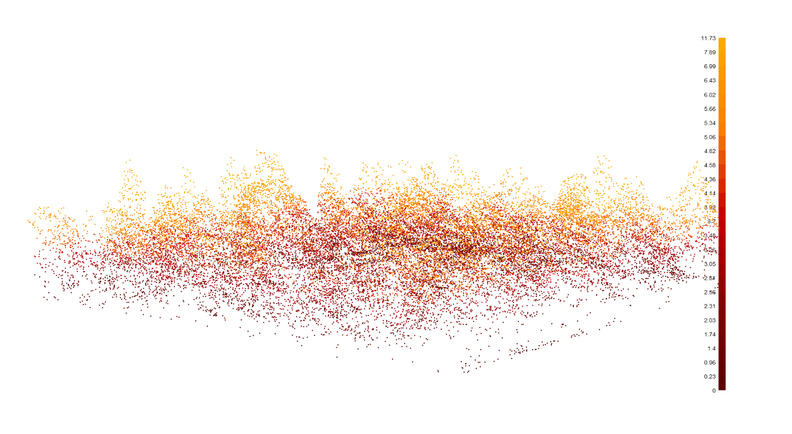
that’s a great workflow, guy.
i’m not your guy, buddy.
2.3 LadderFuelsR
The LadderFuelsR package (Viedma et al. 2024) is described as enabling the use of “LiDAR data and the LadderFuelsR package…[to] provide an automated tool for analysing the vertical fuel structure of a forest and to calculate crown base height (CBH) at tree-level, among other parameters” (p.1).
let’s check what’s in this package
## calculate_gaps_perc : function (LAD_profiles, min_height = 1.5)
## get_cbh_metrics : function (effective_LAD, min_height = 1.5, hdepth1_height = 2.5, verbose = TRUE)
## get_cum_break : function (LAD_profiles, cbh_metrics, threshold = 75, min_height = 1.5,
## verbose = TRUE)
## get_depths : function (LAD_profiles, distance_metrics, step = 1, min_height = 1.5, verbose = TRUE)
## get_distance : function (gap_cbh_metrics, gaps_perc, step = 1, min_height = 1.5, verbose = TRUE)
## get_effective_gap : function (effective_depth, number_steps = 1, min_height = 1.5, verbose = TRUE)
## get_gaps_fbhs : function (LAD_profiles, step = 1, min_height = 1.5, perc_gap = 25, perc_base = 25,
## verbose = TRUE)
## get_layers_lad : function (LAD_profiles, effective_distances, threshold = 10, step = 1,
## min_height = 1.5, verbose = TRUE)
## get_plots_cbh_bp : function (LAD_profiles, cummulative_LAD, min_height = 1.5)
## get_plots_cbh_LAD : function (LAD_profiles, cbh_metrics, min_height = 1.5)
## get_plots_cbh_lastdist : function (LAD_profiles, cbh_metrics, min_height = 1.5)
## get_plots_cbh_maxdist : function (LAD_profiles, cbh_metrics, min_height = 1.5)
## get_plots_effective : function (LAD_profiles, effective_LAD, min_height = 1.5)
## get_plots_gap_fbh : function (LAD_profiles, gap_cbh_metrics, min_height = 1.5)
## get_real_depths : function (effective_fbh, step = 1, min_height = 1.5, verbose = TRUE)
## get_real_fbh : function (depth_metrics, step = 1, number_steps = 1, min_height = 1.5,
## verbose = TRUE)
## get_renamed_df : function (df)
## get_renamed0_df : function (df)2.3.1 Prep for the package
For this package we need to do some cleaning of our las data and our polygon crown data. We need to attach the treeID column from our spatial crowns to the las data using lidR::merge_spatial(). This function allows for only polygons so we need to get rid of the multipolygons in the crown data. We’ll keep the largest part of the multipolygon as the smaller part is usually a residual pixel from the CHM. We also generate a tree_index as a numeric id which is needed by the LadderFuelsR package since treeID is character.
# the lidR::merge_spatial requires only polygons so we need to rid the multipolygons
crowns_sf_poly <-
# start with only polygons
cloud2trees_ans$crowns_sf %>%
dplyr::filter(sf::st_geometry_type(geometry)=="POLYGON") %>%
# union on cleaned multipolygons
dplyr::bind_rows(
cloud2trees_ans$crowns_sf %>%
dplyr::filter(sf::st_geometry_type(geometry)=="MULTIPOLYGON") %>%
sf::st_cast(to = "POLYGON", do_split = T, warn = F) %>%
dplyr::mutate(axxx = sf::st_area(geometry)) %>% # axxx is so we don't overwrite a column
dplyr::group_by(treeID) %>%
dplyr::filter(axxx == max(axxx)) %>% # keep the biggest crown polygon by treeID
dplyr::ungroup() %>%
dplyr::select(-axxx)
) %>%
# generate a treeID index because it needs to be numeric
dplyr::ungroup() %>%
dplyr::mutate(tree_index = dplyr::row_number())does it look good?
plt_chm +
geom_sf(data = cloud2trees_ans$treetops_sf, color = "blue") +
geom_sf(data = crowns_sf_poly, fill = NA, color = "steelblue")
now we’ll attach the treeID column to the normalized las file and keep only the points that fall within a tree crown.
crowns_nlas_temp <- lidR::merge_spatial(
las = nlas_temp
, source = crowns_sf_poly
, attribute = "tree_index"
) %>%
lidR::filter_poi(!is.na(tree_index)) %>%
lidR::filter_poi(Classification!=2)
# what is this data?
crowns_nlas_temp@data %>% dplyr::glimpse()## Rows: 9,885
## Columns: 17
## $ X <dbl> 453540.9, 453541.3, 453541.5, 453541.8, 453542.0, 45…
## $ Y <dbl> 4458556, 4458556, 4458556, 4458556, 4458556, 4458556…
## $ Z <dbl> 6.196, 7.331, 5.996, 7.657, 6.043, 10.264, 8.629, 7.…
## $ gpstime <dbl> 409990.3, 409990.3, 409990.3, 409990.3, 409990.3, 40…
## $ Intensity <int> 15, 24, 47, 137, 41, 83, 43, 37, 9, 168, 151, 9, 92,…
## $ ReturnNumber <int> 1, 1, 2, 1, 2, 1, 2, 3, 4, 1, 1, 1, 1, 2, 1, 2, 3, 1…
## $ NumberOfReturns <int> 2, 3, 3, 3, 3, 5, 5, 5, 5, 1, 1, 2, 3, 3, 3, 3, 3, 2…
## $ ScanDirectionFlag <int> 0, 0, 0, 0, 0, 0, 0, 0, 0, 0, 0, 0, 0, 0, 0, 0, 0, 0…
## $ EdgeOfFlightline <int> 0, 0, 0, 0, 0, 0, 0, 0, 0, 0, 0, 0, 0, 0, 0, 0, 0, 0…
## $ Classification <int> 5, 5, 5, 5, 5, 5, 5, 5, 5, 5, 5, 5, 5, 5, 5, 5, 5, 5…
## $ Synthetic_flag <lgl> FALSE, FALSE, FALSE, FALSE, FALSE, FALSE, FALSE, FAL…
## $ Keypoint_flag <lgl> FALSE, FALSE, FALSE, FALSE, FALSE, FALSE, FALSE, FAL…
## $ Withheld_flag <lgl> FALSE, FALSE, FALSE, FALSE, FALSE, FALSE, FALSE, FAL…
## $ ScanAngleRank <int> -7, -7, -7, -7, -7, -7, -7, -7, -7, -7, -7, -7, -7, …
## $ UserData <int> 62, 74, 61, 76, 60, 102, 85, 76, 60, 103, 115, 32, 8…
## $ PointSourceID <int> 9, 9, 9, 9, 9, 9, 9, 9, 9, 9, 9, 9, 9, 9, 9, 9, 9, 9…
## $ tree_index <int> 64, 64, 64, 67, 67, 67, 67, 67, 67, 67, 67, 68, 68, …plot the las data colored by tree_index
crowns_nlas_temp %>%
lidR::plot(
color = "tree_index", bg = "white", legend = F
, pal = viridis::turbo(
n = crowns_nlas_temp@data$tree_index %>% # this whole thing gets n unique colors
unique() %>%
length() %>%
`*`(2) # with some separation between the hues
) %>%
sample(
crowns_nlas_temp@data$tree_index %>%
unique() %>%
length()
)
)
check it for one tree
crowns_nlas_temp %>%
lidR::filter_poi(
tree_index ==
# get the tree with the most points
crowns_nlas_temp@data %>%
dplyr::count(tree_index) %>%
dplyr::filter(n == max(n)) %>%
dplyr::slice_head(n=1) %>%
dplyr::pull(tree_index)
) %>%
lidR::plot(color = "tree_index", bg = "white", legend = F)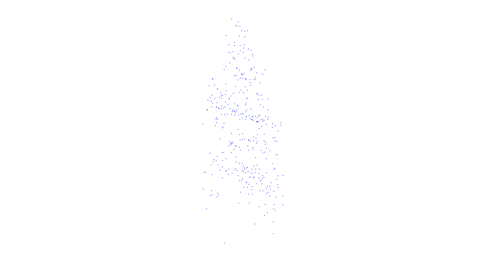
interesting, with more dense point clouds this would look more like a tree
2.3.2 Defining function for computing crown-level metrics
Not sure how necessary this is, but pulling it from the package README
notice, none of these functions utilize the intensity, or “i”, parameter
custom_crown_metrics <- function(z, i) { # user-defined function
metrics <- list(
dz = 1,
th = 1,
z_max = max(z),# max height
z_min = min(z),# min height
z_mean = mean(z),# mean height
z_sd = sd(z), # vertical variability of points
z_q1=quantile(z, probs = 0.01),
z_q5=quantile(z, probs = 0.05),
z_q25=quantile(z, probs = 0.25),
z_q50=quantile(z, probs = 0.50),
z_q75=quantile(z, probs = 0.75),
z_q95=quantile(z, probs = 0.95),
crr=(mean(z)-min(z))/(max(z)-min(z))
)
return(metrics) # output
}
# idk why they did this...just for shorthand? just define it like that from the start
# ccm = ~custom_crown_metrics(z = Z, i = Intensity)2.3.3 Computing crown level standard metrics within all trees detected
let’s see how they do it from the package README
first, calculate metrics from the las data by tree (with code updates by gw)
# setting a minimum Z height to look at crown metrics
fcrowns_nlas_temp <- lidR::filter_poi(crowns_nlas_temp, Z >= 1)
# Metric derivation at different levels of regularization
crowns_metrics_df <-
# gw updated this to do it all at once
lidR::crown_metrics(
las = fcrowns_nlas_temp
, func = .stdtreemetrics # stdtreemetrics is a lidR predefined function for tree-based metrics
, geom = "convex" # Geometry type of the output
, attribute = "tree_index"
) %>%
dplyr::left_join(
lidR::crown_metrics(
las = fcrowns_nlas_temp
, func = ~ custom_crown_metrics(z = Z) # the custom function defined above
, geom = "convex" # Geometry type of the output
, attribute = "tree_index"
) %>%
sf::st_drop_geometry()
, by = "tree_index"
) %>%
# define crown diameter
dplyr::mutate(
crown_diam = sqrt(convhull_area/ pi) * 2
)
# a df, ok
crowns_metrics_df %>% dplyr::glimpse()## Rows: 89
## Columns: 19
## $ tree_index <int> 2, 3, 5, 6, 7, 8, 10, 12, 13, 14, 16, 18, 21, 22, 23, 24…
## $ Z <dbl> 12.866, 11.826, 8.980, 7.009, 6.352, 6.489, 7.472, 9.940…
## $ npoints <int> 108, 73, 48, 13, 11, 16, 11, 25, 118, 128, 8, 80, 21, 27…
## $ convhull_area <dbl> 7.166, 8.132, 3.042, 0.853, 1.141, 1.137, 0.554, 5.327, …
## $ dz <dbl> 1, 1, 1, 1, 1, 1, 1, 1, 1, 1, 1, 1, 1, 1, 1, 1, 1, 1, 1,…
## $ th <dbl> 1, 1, 1, 1, 1, 1, 1, 1, 1, 1, 1, 1, 1, 1, 1, 1, 1, 1, 1,…
## $ z_max <dbl> 12.866, 11.826, 8.980, 7.009, 6.352, 6.489, 7.472, 9.940…
## $ z_min <dbl> 1.926, 1.705, 2.469, 2.513, 1.702, 1.456, 2.428, 2.994, …
## $ z_mean <dbl> 7.870843, 8.036315, 5.881000, 4.762000, 4.380545, 4.4591…
## $ z_sd <dbl> 2.8488448, 2.2873433, 1.8985180, 1.6263112, 1.6196375, 1…
## $ z_q1 <dbl> 2.02244, 3.89092, 2.54702, 2.53208, 1.71760, 1.69855, 2.…
## $ z_q5 <dbl> 2.80340, 4.96060, 2.76435, 2.60840, 1.78000, 2.66875, 2.…
## $ z_q25 <dbl> 5.75425, 5.91900, 4.03000, 3.00000, 3.45850, 3.41000, 3.…
## $ z_q50 <dbl> 7.8825, 8.0970, 6.3520, 5.2200, 5.0770, 4.9280, 4.9980, …
## $ z_q75 <dbl> 10.27750, 10.05700, 7.25700, 5.75000, 5.36450, 5.44450, …
## $ z_q95 <dbl> 12.19095, 11.50240, 8.42115, 6.95260, 6.34900, 6.34575, …
## $ crr <dbl> 0.5434043, 0.6255622, 0.5240362, 0.5002224, 0.5760313, 0…
## $ geometry <POLYGON [m]> POLYGON ((453546.1 4458594,..., POLYGON ((453543…
## $ crown_diam <dbl> 3.0206017, 3.2177607, 1.9680434, 1.0421484, 1.2053076, 1…what “tree-based metrics” come from the .stdtreemetrics? maybe maximum Z, number of points, and crown area…not sure how useful these are for defining CBH. we shall see. the “z_” metrics are neat.
does every crown have some crown metrics?
# has the same number of trees as our crown polygons?
dplyr::tibble(
crowns_sf_poly_trees = nrow(crowns_sf_poly)
, crowns_nlas_trees = fcrowns_nlas_temp@data$tree_index %>% unique() %>% length()
, crowns_metrics_df_trees = nrow(crowns_metrics_df)
) %>%
kableExtra::kbl() %>% kableExtra::kable_styling()| crowns_sf_poly_trees | crowns_nlas_trees | crowns_metrics_df_trees |
|---|---|---|
| 107 | 107 | 89 |
guess not. let’s look at some of those metrics and the convex hull polygons created by the lidR::crown_metrics()
plt_chm +
ggnewscale::new_scale_fill() +
geom_sf(data = crowns_metrics_df, mapping = aes(fill = z_mean), color = "steelblue") +
harrypotter::scale_fill_hp("always", alpha = 0.8)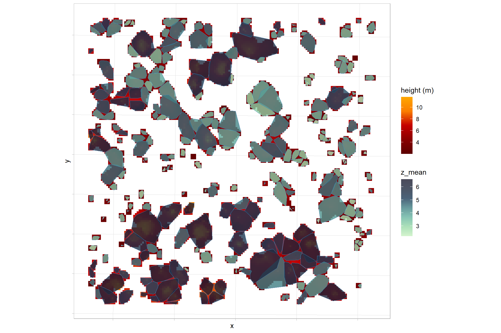
note the overlap of those polygons. what if we attach the crown metrics to the original crown polygons?
plt_chm +
ggnewscale::new_scale_fill() +
geom_sf(
data = crowns_sf_poly %>%
dplyr::left_join(
crowns_metrics_df %>% sf::st_drop_geometry()
, by = "tree_index"
)
, mapping = aes(fill = z_mean), color = "steelblue"
) +
harrypotter::scale_fill_hp("always", alpha = 0.8, na.value = "black")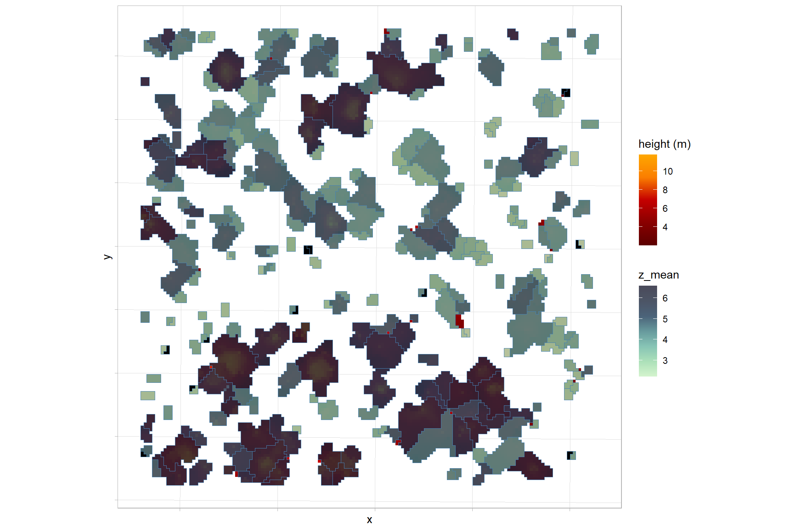
what is this crr=(mean(z)-min(z))/(max(z)-min(z)) variable?
plt_chm +
ggnewscale::new_scale_fill() +
geom_sf(data = crowns_metrics_df, mapping = aes(fill = crr), color = "steelblue") +
harrypotter::scale_fill_hp("always", alpha = 0.8)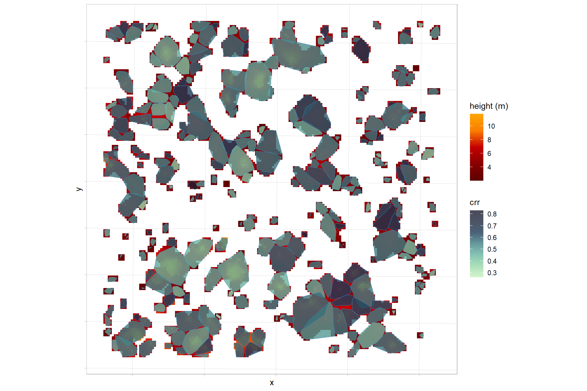
how about crown diameter?
plt_chm +
ggnewscale::new_scale_fill() +
geom_sf(data = crowns_metrics_df, mapping = aes(fill = crown_diam), color = "steelblue") +
harrypotter::scale_fill_hp("always", alpha = 0.8)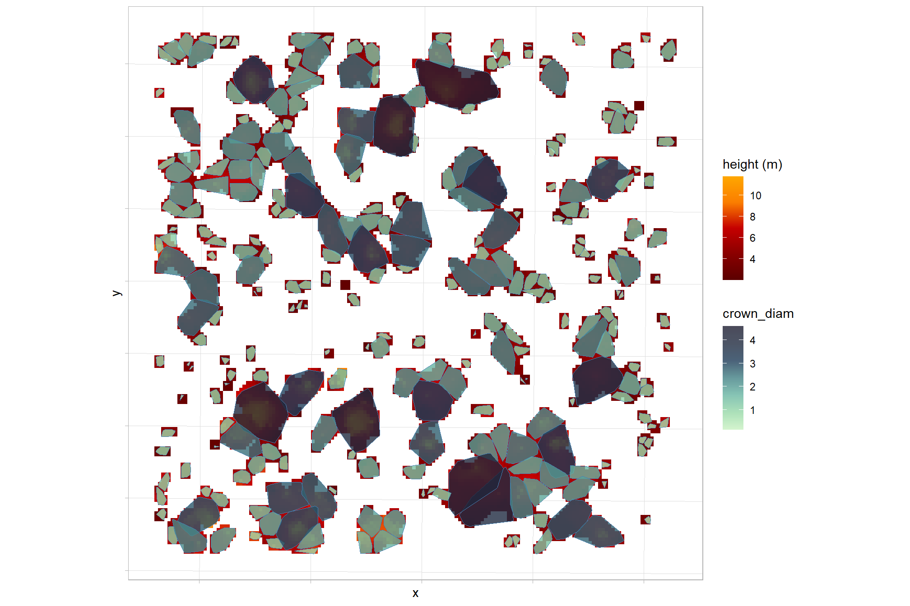
2.3.4 LAI-LAD metrics by Trees
see this section of the package README
after height normalization and crown segmentation, the LiDAR returns were cropped with the crown contours being voxelized to obtain VHPs from which the absolute mean LAD at each height bin was retrieved (Viedma et al. 2024, p.2).
in this section, the las files cropped to individual trees (i.e. one tree at a time) are passed to the leafR package to calculate the LAI-LAD metrics. it seems very inefficient to perform this one-by-one for individual tree point clouds and not something that would work well if many, many trees.
let’s go through the process for one tree point cloud
# leafR::lad.voxels requires a file location :\
fn <- paste0(tempdir(), "/temp.las")
# let's sample the tree with the most points
ti <- crowns_nlas_temp@data %>%
dplyr::count(tree_index) %>%
dplyr::arrange(desc(n)) %>%
dplyr::slice_head(n=1) %>%
dplyr::pull(tree_index)
f <- crowns_nlas_temp %>%
lidR::filter_poi(tree_index == ti) %>% # put this in a function and map over trees
lidR::writeLAS(file = fn)2.3.4.1 leafR::lad.voxels
Creates a data frame of the 3D voxels information (xyz) with Leaf Area Density values from las file.
##### leafR::lad.voxels
# Creates a data frame of the 3D voxels information (xyz) with Leaf Area Density values from las file
lad_voxels <- leafR::lad.voxels(
# normlas.file requires a file location :\
normlas.file = f
, grain.size = 2
)
class(lad_voxels)## [1] "list"## List of 2
## $ LAD : num [1:20, 1:14] NA 0 0 0 0 ...
## $ coordenates:'data.frame': 20 obs. of 2 variables:
## ..$ X: num [1:20] 453559 453561 453563 453565 453567 ...
## ..$ Y: num [1:20] 4458585 4458585 4458585 4458585 4458585 ...2.3.4.2 leafR::lad.profile
This function calculate the lad profile from the input lad.voxels. By “profile” I think they mean “vertical height profile”
##### leafR::lad.profile
# This function calculate the lad profile from the input lad.voxels
lad_profile <- leafR::lad.profile(lad_voxels, relative = F)
class(lad_profile)## [1] "data.frame"## 'data.frame': 14 obs. of 2 variables:
## $ height: num 1.5 2.5 3.5 4.5 5.5 6.5 7.5 8.5 9.5 10.5 ...
## $ lad : num 0.693 0.405 0.78 0.45 0.289 ...2.3.4.3 leafR::lai
calculates the lead area index (LAI)
lai_tot <- leafR::lai(lad_profile)
lai_understory <- leafR::lai(lad_profile, min = 0.3, max = 2.5)
class(lai_tot)## [1] "numeric"## num 3.83## num 1.12.3.4.4 leafR::LAHV
Calculates the leaf area height volume (LAHV) metric as described in Almeida et al. (2019)
lahv_metric <- leafR::LAHV(lad_profile, LAI.weighting = FALSE, height.weighting = FALSE)
class(lahv_metric)## [1] "numeric"## num 18.22.3.4.5 Bring together and clean
they call this “Depurating Tree LAD profiles”
- replace missing LAD values with
0.01(no explanation of “why”) - keep only trees where there are at least 6 profile (vertical height profile) records (>5)
leafr_df <-
dplyr::tibble(
tree_index = ti # put this in a function and map over trees
) %>%
dplyr::bind_cols(lad_profile) %>%
dplyr::mutate(
lad = dplyr::coalesce(lad, 0.01) # not sure why they put in 0.01 here
, lai_tot = lai_tot[1]
, lai_understory = lai_understory[1]
, lahv = lahv_metric[1]
, vhp_n = dplyr::n() # they keep trees where there are at least 6 (>5)
) %>%
dplyr::arrange(tree_index, height)what is this?
## Rows: 14
## Columns: 7
## $ tree_index <int> 78, 78, 78, 78, 78, 78, 78, 78, 78, 78, 78, 78, 78, 78
## $ height <dbl> 1.5, 2.5, 3.5, 4.5, 5.5, 6.5, 7.5, 8.5, 9.5, 10.5, 11.5…
## $ lad <dbl> 0.693147181, 0.405465108, 0.780157428, 0.449590086, 0.2…
## $ lai_tot <dbl> 3.825655, 3.825655, 3.825655, 3.825655, 3.825655, 3.825…
## $ lai_understory <dbl> 1.098612, 1.098612, 1.098612, 1.098612, 1.098612, 1.098…
## $ lahv <dbl> 18.2418, 18.2418, 18.2418, 18.2418, 18.2418, 18.2418, 1…
## $ vhp_n <int> 14, 14, 14, 14, 14, 14, 14, 14, 14, 14, 14, 14, 14, 14seems like the data used to create Figure 1 (b)
leafr_df %>%
ggplot(mapping = aes(x = lad, y = height)) +
geom_path() +
geom_point() +
theme_light()
what about the point cloud in voxels?
# calculate voxel metrics
voxel_metrics(
crowns_nlas_temp %>% lidR::filter_poi(tree_index == ti)
, ~list(N = length(Z))
, 2
) %>%
lidR::plot(
color="N", pal = viridis::mako(n = 11, direction = -1)
, size = 2, bg = "white", voxel = TRUE, legend = T
)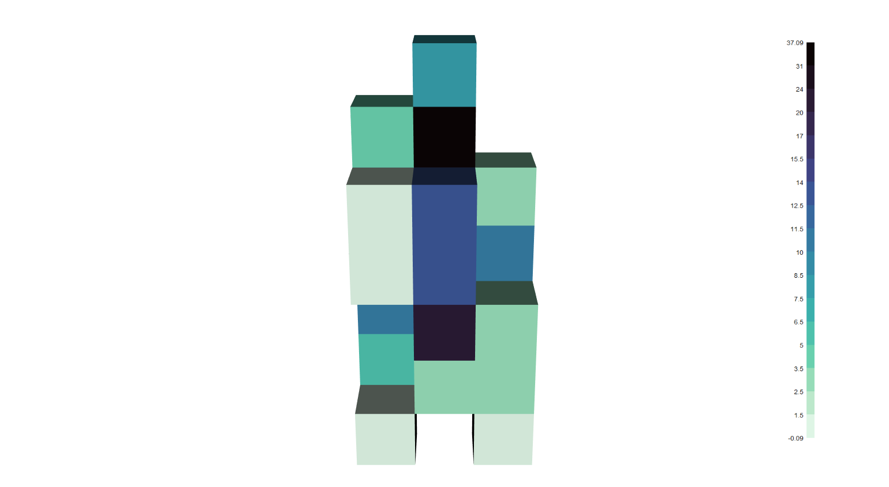
2.3.5 I quit
I quit following the package README because it’s unnecessarily complex
2.4 LadderFuelsR - simplified
the package README is so convoluted and difficult to follow. let’s just cut the superfluity (i’ll see your “depurating” and raise you “superfluity”).
someone had to identify the minimum steps needed to get CBH and cut out the superfluous clutter (bonus points if you see what i did there ;).
2.4.1 Setup
the las files cropped to individual trees (i.e. one tree at a time) are passed to the leafR package to calculate the LAI-LAD metrics. it seems very inefficient to perform this one-by-one for individual tree point clouds and not something that would work well if many, many trees.
let’s go through the process for one tree point cloud
# leafR::lad.voxels requires a file location :\
fn <- paste0(tempdir(), "/temp.las")
# let's sample the tree with the most points
ti <- crowns_nlas_temp@data %>%
dplyr::count(tree_index) %>%
dplyr::arrange(desc(n)) %>%
dplyr::slice_head(n=1) %>%
dplyr::pull(tree_index)
(
f <- crowns_nlas_temp %>%
lidR::filter_poi(tree_index == ti) %>% # put this in a function and map over trees
lidR::writeLAS(file = fn)
)## [1] "C:\\Users\\georg\\AppData\\Local\\Temp\\RtmpMLixba/temp.las"2.4.2 Step 0 - leafR steps
leafR::lad.voxels()- use normalized las file to create a data frame of the 3D voxels information (xyz) with Leaf Area Density valuesleafR::lad.profile()- calculate the lad profile from the input lad.voxels (step 1)- ensure that the data frame returned from
leafR::lad.profile()has a column namedtreeIDwhich uniquely identifies individual trees. also, that column has to be the first column (bad practice by the authors)
## leafR::lad.voxels
lad_voxels <- leafR::lad.voxels(normlas.file = f, grain.size = 2)
lad_voxels %>% dplyr::glimpse()## List of 2
## $ LAD : num [1:20, 1:14] NA 0 0 0 0 ...
## $ coordenates:'data.frame': 20 obs. of 2 variables:
## ..$ X: num [1:20] 453559 453561 453563 453565 453567 ...
## ..$ Y: num [1:20] 4458585 4458585 4458585 4458585 4458585 ...## leafR::lad.profile
lad_profile <- leafR::lad.profile(lad_voxels, relative = F)
## add treeID column that is required by the package, though it's never stated
lad_profile <- lad_profile %>%
dplyr::mutate(tree_index = ti, treeID = factor(tree_index)) %>%
## !!!!! not only does the treeID column have to exist...it has to be the first column
dplyr::relocate(treeID)
lad_profile %>% dplyr::glimpse()## Rows: 14
## Columns: 4
## $ treeID <fct> 78, 78, 78, 78, 78, 78, 78, 78, 78, 78, 78, 78, 78, 78
## $ height <dbl> 1.5, 2.5, 3.5, 4.5, 5.5, 6.5, 7.5, 8.5, 9.5, 10.5, 11.5, 12…
## $ lad <dbl> 0.693147181, 0.405465108, 0.780157428, 0.449590086, 0.28920…
## $ tree_index <int> 78, 78, 78, 78, 78, 78, 78, 78, 78, 78, 78, 78, 78, 782.4.3 Step 1 - LadderFuelsR::get_gaps_fbhs
calculates gaps and fuel layers base height (FBH) as the difference in percentiles between consecutive LAD values along the vertical tree profile (VTP). Negative differences are linked to gaps and positive differences to fuel base height.
notice that this function is broken in the package…see this issue
Viedma et al. 2024 note:
Function
get_gaps_fbhs()identifies height bins with negative differences in LAD percentile for identifying gaps. When among consecutive height bins differences are negative, it selects the height bin with the lowest LAD (<= perc_gap [P25th]). Additionally, the function looks for height bins with LAD <= P25th, and when they are consecutive, it takes only the first and last values of the set being considered. For obtaining fuel layer base heights (FBHs), it identifies height bins with positive differences in LAD percentile. When such positive differences are consecutive, it selects the height bin with minimum LAD (> perc_base [P25th]). Moreover, it filters height bins with LAD > P25th, and when these are consecutive it takes only the first and last values of each set. Finally, to avoid any duplicated height bins in gaps and FBHs, it selects only the height bins identified as gaps that were not present in the FBH file, giving preference to the FBH height bins (p.3-5)
### this function is broken!!!!!!!!!!!!!!!!!!!!!!!!!!
source("_broken_gap_fbh_from_LadderFuelsR.R") # gw fix here
## LadderFuelsR::get_gaps_fbhs
gaps_fbhs <-
gw_get_gaps_fbhs(
# LadderFuelsR::get_gaps_fbhs(
LAD_profiles = lad_profile
, step=1
, min_height=1.5
, perc_gap= 25, perc_base= 25
, verbose=TRUE
)
gaps_fbhs %>% dplyr::glimpse()## Rows: 1
## Columns: 24
## $ treeID <fct> 78
## $ cbh1 <chr> "1.5"
## $ cbh2 <chr> "3.5"
## $ cbh3 <chr> "6.5"
## $ cbh4 <chr> "9.5"
## $ gap1 <chr> "10.5"
## $ cbh5 <chr> "11.5"
## $ gap2 <chr> "12.5"
## $ gap3 <chr> "14.5"
## $ gap_lad1 <dbl> 0
## $ gap_lad2 <dbl> 0
## $ gap_lad3 <dbl> 0
## $ cbh_perc1 <dbl> 95
## $ cbh_perc2 <dbl> 100
## $ cbh_perc3 <dbl> 80
## $ cbh_perc4 <dbl> 40
## $ cbh_perc5 <dbl> 35
## $ cbh_lad1 <dbl> 1
## $ cbh_lad2 <dbl> 3
## $ cbh_lad3 <dbl> 6
## $ cbh_lad4 <dbl> 9
## $ cbh_lad5 <dbl> 11
## $ max_height <dbl> 14.5
## $ treeID1 <dbl> 78# fix the columns that should be numeric
gaps_fbhs <- gaps_fbhs %>%
dplyr::mutate(dplyr::across(
!tidyselect::starts_with("treeID")
, as.numeric
))let’s take LadderFuelsR::get_plots_gap_fbh() for a spin which creates the plot in Figure 3 (plots of leaf area density profiles with fuel base heights in green and gaps >= step: Distance between bins in red).
This function plots gaps and fuel layers base height (fbh) in the vertical tree profile (VTP).
LadderFuelsR::get_plots_gap_fbh(
LAD_profiles = lad_profile
, gap_cbh_metrics = gaps_fbhs
, min_height = 1.5
)## $`78`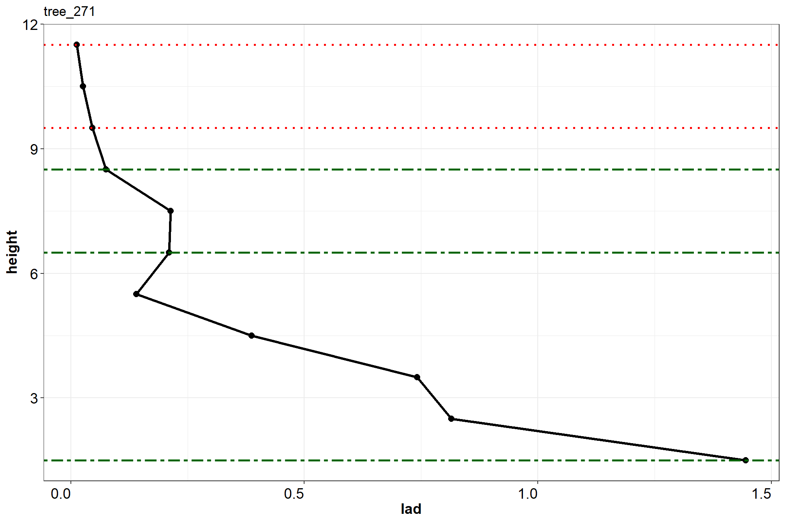
in RED are the GAPS and in GREEN the FBHs
can we re-create this?
ggplot() +
geom_path(data = lad_profile, mapping = aes(x = lad, y = height)) +
geom_point(data = lad_profile, mapping = aes(x = lad, y = height)) +
# gaps data
geom_hline(
data = gaps_fbhs %>%
dplyr::select(
tidyselect::starts_with("gap") & !tidyselect::starts_with("gap_")
) %>%
tidyr::pivot_longer(dplyr::everything())
, aes(yintercept = value, color = "gaps")
, linetype = "dotted"
, lwd = 1.2
) +
# fbh data
geom_hline(
data = gaps_fbhs %>%
dplyr::select(
tidyselect::starts_with("cbh") & !tidyselect::starts_with("cbh_")
) %>%
tidyr::pivot_longer(dplyr::everything())
, aes(yintercept = value, color = "FBHs")
, linetype = "dotdash"
, lwd = 1.2
) +
scale_color_manual(values = c("green4", "red"), name = "") +
scale_y_continuous(breaks = scales::extended_breaks(10)) +
theme_light() +
theme(legend.position = "top")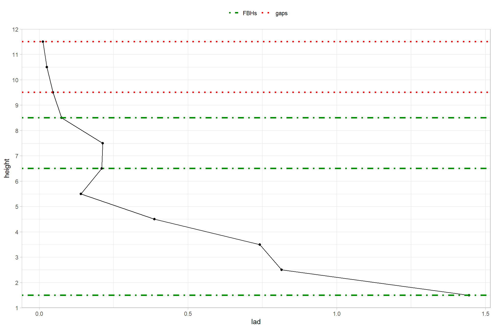
yes. the gap and cbh columns contain the data ( but not the gap_ and cbh_ columns ;/ ).
but what are these columns?
cbh- Height of the fuel layer base height (m)gap- Height of gap between fuel layers (m)
2.4.4 Step 2 - LadderFuelsR::calculate_gaps_perc
this function calculates the percentile value of each height
## LadderFuelsR::calculate_gaps_perc
#!!!!!!!!!!!!!!!!!!!!!!!!!!!!!!!!!!!!!!! ERROR if treeID is not the first column
gaps_perc <- LadderFuelsR::calculate_gaps_perc(
LAD_profiles = lad_profile %>% dplyr::select(-tree_index)
, min_height=1.5
)## [1] "treeID: 78"## Rows: 14
## Columns: 5
## $ treeID <fct> 78, 78, 78, 78, 78, 78, 78, 78, 78, 78, 78, 78, 78, 78
## $ height <dbl> 1.5, 2.5, 3.5, 4.5, 5.5, 6.5, 7.5, 8.5, 9.5, 10.5, 11.…
## $ lad <dbl> 0.693147181, 0.405465108, 0.780157428, 0.449590086, 0.…
## $ critical_points <dbl> -0.0000002167, 0.0000920681, -0.0000699130, 0.00015765…
## $ percentil <dbl> 95, 70, 100, 85, 65, 80, 55, 50, 40, 25, 35, 20, 10, 52.4.5 Step 3 - LadderFuelsR::get_distance
calculates distances (and their heights) between fuel layers as the difference between consecutive gaps and fuel bases (the gap height always must be lower than the fuel base height).
Viedma et al. 2024 note:
Function
get_distance()calculates the distance between fuel layers as the height difference between each pair of consecutive gaps and FBHs (Figure 4a). In addition, when there are consecutive gaps, the distance is calculated as the difference between the minimum gap and the next FBH encountered (Figure 4b). Similarly, when there were consecutive FBHs, the distance was calculated as the difference between the minimum FBH and the previous gap encountered. When there are gaps above the last FBH, these values were removed for further analysis. (p.5)
## LadderFuelsR::get_distance
metrics_distance <- LadderFuelsR::get_distance(
gap_cbh_metrics = gaps_fbhs
, gaps_perc = gaps_perc
, step=1, min_height=1.5
)
metrics_distance %>% dplyr::glimpse()## Rows: 1
## Columns: 21
## $ treeID1 <fct> 78
## $ treeID <fct> 78
## $ cbh1 <dbl> 1.5
## $ cbh2 <dbl> 3.5
## $ cbh3 <dbl> 6.5
## $ cbh4 <dbl> 9.5
## $ gap1 <dbl> 10.5
## $ cbh5 <dbl> 11.5
## $ gap2 <dbl> 12.5
## $ gap3 <dbl> 14.5
## $ dist5 <dbl> 1
## $ dist1 <dbl> 0
## $ max_height <dbl> 14.5
## $ dist2 <dbl> 0
## $ dist3 <dbl> 0
## $ dist4 <dbl> 0
## $ Hdist5 <dbl> 10.5
## $ Hdist1 <dbl> 1.5
## $ Hdist2 <dbl> 0
## $ Hdist3 <dbl> 0
## $ Hdist4 <dbl> 02.4.6 Step 4 - LadderFuelsR::get_depths
calculates fuels depth as the difference between gaps interleaved between fuel layers minus one step if the fuel depths are greater than one step.
Viedma et al. 2024 note:
Function
get_depths()calculates the depth of each fuel layer as the difference between the gaps comprising the FBHs. Finally, to get the real layer depth, and only when layer depth is greater than the step, it subtracts the step value from the depth (Figure 5). There are special cases when there are no gaps between FBHs: (i) if the gap height is less than the minimum height of the FBHs, depth is calculated as the difference between the maximum height of the FBHs set and the height of that gap minus the step (Figure 6a); (ii) if the gap height is greater than the maximum height of FBHs, depth is the difference between the maximum gap height and the minimum height of the FBHs set minus the step (Figure 6b). (p.5)
## LadderFuelsR::get_depths
metrics_depth <- LadderFuelsR::get_depths(
LAD_profiles = lad_profile
, distance_metrics = metrics_distance
, step= 1, min_height= 1.5
)
metrics_depth %>% dplyr::glimpse()## Rows: 1
## Columns: 13
## $ treeID <fct> 78
## $ treeID1 <fct> 78
## $ Hdepth1 <dbl> 9.5
## $ Hdepth2 <dbl> 11.5
## $ dist1 <dbl> 1.5
## $ dist2 <dbl> 1
## $ Hdist1 <dbl> 1.5
## $ Hdist2 <dbl> 10.5
## $ depth1 <dbl> 8
## $ depth2 <dbl> 1
## $ cbh1 <dbl> 1.5
## $ cbh2 <dbl> 11.5
## $ max_height <dbl> 14.52.4.7 Step 5 - LadderFuelsR::get_real_fbh
reshapes fuel layers after removing distances equal to any number of height bin steps, keeping the first “base height” from those consecutive ones separated by such distance.
Viedma et al. 2024 note:
Function
get_real_fbh()identifies the first FBH from consecutive FBHs or the first FBH from those separated by a distance equal to number of steps that can be skipped to reshape the fuel layers. For each distance value, it locates the next FBH value. If distance = num_step, the height of that FBH is propagated upwards. If distance > num_step, the height of that FBH is kept (Figure 7a,b). (p.5-6)
## LadderFuelsR::get_real_fbh
real_fbh <- LadderFuelsR::get_real_fbh(
depth_metrics = metrics_depth
, step= 1, number_steps = 1, min_height=1.5
)
real_fbh %>% dplyr::glimpse()## Rows: 1
## Columns: 13
## $ treeID1 <dbl> 78
## $ Hdepth1 <dbl> 9.5
## $ dist1 <dbl> 1.5
## $ Hdist1 <dbl> 1.5
## $ depth1 <dbl> 8
## $ Hcbh1 <dbl> 1.5
## $ Hdepth2 <dbl> 11.5
## $ dist2 <dbl> 1
## $ Hdist2 <dbl> 10.5
## $ depth2 <dbl> 1
## $ Hcbh2 <dbl> 1.5
## $ treeID <fct> 78
## $ max_height <dbl> 14.52.4.8 Step 6 - LadderFuelsR::get_real_depths
recalculates fuel layers depth after considering distances greater than the actual height bin step.
Viedma et al. 2024 note:
Function
get_real_depths()calculates the cumulative heights of depth values when distance = num_step. It iterates over each distance value and if dist[i] > num_step, it keeps the corresponding depth value. However, if dist[i] = num_step, it sums all consecutive distances and corresponding depth values (Figure 7a,b). (p.6)
## LadderFuelsR::get_real_depths
real_depth <- LadderFuelsR::get_real_depths(effective_fbh = real_fbh, step=1, min_height=1.5)
real_depth %>% dplyr::glimpse()## Rows: 1
## Columns: 8
## $ treeID <fct> 78
## $ treeID1 <dbl> 78
## $ Hdptf1 <dbl> 11.5
## $ dist1 <dbl> 0
## $ dptf1 <dbl> 10
## $ Hcbh1 <dbl> 1.5
## $ Hdist1 <dbl> 1.5
## $ max_height <dbl> 14.52.4.9 Step 7 - LadderFuelsR::get_effective_gap
recalculates the distance between fuel layers after considering distances greater than any number of height bin steps.
Viedma et al. 2024 note:
Function
get_effective_gap()calculates the effective distance between fuel layers based on the previously identified FBHs. It loops over all the FBHs and, at each iteration, it checks if the current value and the next value in FBHs are not equal. If they are not equal, it keeps the corresponding distance value, otherwise it removes it (Figure 8). (p.6)
## LadderFuelsR::get_effective_gap
eff_gap <- LadderFuelsR::get_effective_gap(
effective_depth = real_depth
, number_steps = 1, min_height= 1.5
)
eff_gap %>% dplyr::glimpse()## Rows: 1
## Columns: 9
## $ treeID <fct> 78
## $ treeID1 <dbl> 78
## $ dist1 <dbl> 0
## $ dptf1 <dbl> 10
## $ effdist1 <dbl> 0
## $ Hcbh1 <dbl> 1.5
## $ Hdist1 <dbl> 1.5
## $ Hdptf1 <dbl> 11.5
## $ max_height <dbl> 14.52.4.10 Step 8 - LadderFuelsR::get_layers_lad
calculates the percentage of Leaf Area Density (LAD) within each fuel layer (first output) and removes those fuel layers with LAD percentage less than a specified threshold (default 10 the depth of the remaining ones (second output).
Viedma et al. 2024 note:
Function
get_layers_lad()calculates LAD (%) within each fuel layer, which is defined by the height range between the FBH and its depth. First, it calculates the total LAD from the original profile. Next, it retrieves the beginning and end height bin of each fuel layer and calculates the percentage of total LAD that falls within that height range. Later, the fuel layers that had a LAD (%) less than a specified threshold (default 10%) were removed, recalculating the distances (Figure 9). (p.7)
## LadderFuelsR::get_layers_lad
layers_lad_df <- LadderFuelsR::get_layers_lad(
LAD_profiles = lad_profile
, effective_distances = eff_gap
, threshold=10,step = 1,min_height= 1.5
)
layers_lad_df %>% str()## List of 2
## $ df1:'data.frame': 1 obs. of 12 variables:
## ..$ treeID1 : num 78
## ..$ treeID : Factor w/ 1 level "78": 1
## ..$ dist1 : num 0
## ..$ dptf1 : num 10
## ..$ effdist1 : num 0
## ..$ Hcbh1 : num 1.5
## ..$ Hdist1 : num 1.5
## ..$ Hdptf1 : num 11.5
## ..$ max1 : num 14.5
## ..$ Hcbh1_Hdptf1: num 99.5
## ..$ max_height : num 14.5
## ..$ nlayers : int 1
## $ df2:'data.frame': 1 obs. of 11 variables:
## ..$ treeID1 : num 78
## ..$ treeID : Factor w/ 1 level "78": 1
## ..$ dptf1 : num 10
## ..$ effdist1 : num 0
## ..$ Hcbh1 : num 1.5
## ..$ Hdist1 : num 1.5
## ..$ Hdptf1 : num 11.5
## ..$ max1 : num 14.5
## ..$ max_height : num 14.5
## ..$ Hcbh1_Hdptf1: num 99.5
## ..$ nlayers : int 1idk why it is a list of 2 with the same data just the order of the max_height and Hcbh1_Hdptf1 columns are switched. do you spot another difference??
looking through the befuddling README it looks like the authors only keep the second data frame in the list
## treeID1 treeID dptf1 effdist1 Hcbh1 Hdist1 Hdptf1 max1 max_height
## 1 78 78 10 0 1.5 1.5 11.5 14.5 14.5
## Hcbh1_Hdptf1 nlayers
## 1 99.47572 1is CBH in here? did we do it?
- treeID: tree ID with strings and numeric values
- treeID1: tree ID with only numeric values
- dptf: Depth of fuel layers (m) after considering distances greater than the actual height bin step
- effdist: Effective distance between consecutive fuel layers (m) after considering distances greater than any number of steps
- Hcbh: Base height of each fuel separated by a distance greater than the certain number of steps
- Hdptf: Height of the depth of fuel layers (m) after considering distances greater than the actual step
- Hdist: Height of the distance (> any number of steps) between consecutive fuel layers (m)
- Hcbh_Hdptf - Percentage of LAD values comprised in each effective fuel layer
- max_height - Maximum height of the tree profile
- nlayers - Number of effective fuel layers
is it possible to have multiple Hcbh values for one tree? is step 9 below even necessary at this point?
let’s take the LadderFuelsR::get_plots_effective() function for a spin
LadderFuelsR::get_plots_effective(
LAD_profiles = lad_profile
, effective_LAD = layers_lad_df
, min_height = 1.5
)## $`78`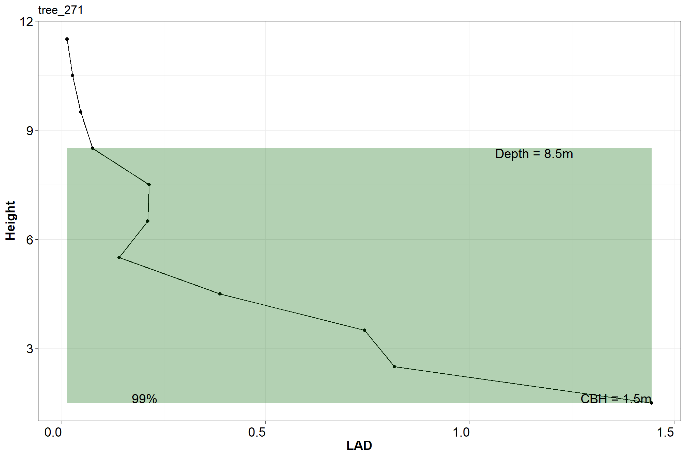
maybe we’ll try to recreate this plot at some point
2.4.11 Step 9 - LadderFuelsR::get_cbh_distLadderFuelsR::get_cbh_metrics
LadderFuelsR::get_cbh_distLadderFuelsR::get_cbh_dist is described in the research article but does not exist in the package or README. Looks like LadderFuelsR::get_cbh_metrics is there though.
determines the CBH of a segmented tree using three criteria: maximum LAD percentage, maximum distance and the last distance.
Viedma et al. 2024 note:
Function
get_cbh_dist()applies three criteria to define the CBH in a segmented tree: the fuel layer containing the maximum LAD (%) (Figure 10a), the fuel layer located at the highest distance (Figure 10b), and the fuel layer separated by the last effective distance (Figure 10c). In the case of maximum LAD (%), the output also gives the CBH from the second fuel layer when the first one has the maximum LAD (%) but its depth is smaller than the value indicated in the parameter ‘hdepth1_height’ (default 2m). (p.8)
## LadderFuelsR::get_cbh_metrics
cbh_metrics <- LadderFuelsR::get_cbh_metrics(effective_LAD = layers_lad_df, min_height= 1.5)
cbh_metrics %>% dplyr::glimpse()## Rows: 1
## Columns: 29
## $ treeID1 <dbl> 78
## $ dptf1 <dbl> 10
## $ effdist1 <dbl> 0
## $ Hcbh1 <dbl> 1.5
## $ Hdist1 <dbl> 1.5
## $ Hdptf1 <dbl> 11.5
## $ max1 <dbl> 14.5
## $ Hcbh1_Hdptf1 <dbl> 99.47572
## $ treeID <fct> 78
## $ max_height <dbl> 14.5
## $ nlayers <int> 1
## $ maxlad_Hcbh <dbl> 1.5
## $ maxlad_Hdist <dbl> 1.5
## $ maxlad_Hdptf <dbl> 11.5
## $ maxlad_dptf <dbl> 10
## $ maxlad_effdist <dbl> 0
## $ maxlad_lad <dbl> 99.47572
## $ max_Hcbh <dbl> 1.5
## $ max_Hdist <dbl> 1.5
## $ max_Hdptf <dbl> 11.5
## $ max_dptf <dbl> 10
## $ max_effdist <dbl> 0
## $ max_lad <dbl> 99.47572
## $ last_Hcbh <dbl> 1.5
## $ last_Hdist <dbl> 1.5
## $ last_Hdptf <dbl> 11.5
## $ last_dptf <dbl> 10
## $ last_effdist <dbl> 0
## $ last_lad <dbl> 99.47572what are these?
- treeID: tree ID with strings and numeric values
- treeID1: tree ID with only numeric values
- dptf: Depth of fuel layers (m) after considering distances greater than the actual height bin step
- effdist: Effective distance between consecutive fuel layers (m) after considering distances greater than any number of steps
- Hcbh: Base height of each fuel separated by a distance greater than the certain number of steps
- Hdptf: Height of the depth of fuel layers (m) after considering distances greater than the actual step
- Hdist: Height of the distance (> any number of steps) between consecutive fuel layers (m)
- Hcbh_Hdptf - Percentage of LAD values comprised in each effective fuel layer
- maxlad_Hcbh - Height of the CBH of the segmented tree based on the maximum LAD percentage
- maxlad1_Hcbh - Height of the CBH from the second fuel layer when the maximum LAD occurred in the first fuel layer but its depth <= “hdepth1_height”
- max_Hcbh - Height of the CBH of the segmented tree based on the maximum distance found in its profile
- last_Hcbh - Height of the CBH of the segmented tree based on the last distance found in its profile
- maxlad_ - Values of distance and fuel depth and their corresponding heights at the maximum LAD percentage
- maxlad1_ - Values of distance and fuel depth and their corresponding heights for the second fuel layer when the maximum LAD occurred in the first fuel layer but its depth <= “hdepth1_height”
- max_ - Values of distance and fuel depth and their corresponding heights at the maximum distance
- last_ - Values of distance and fuel depth and their corresponding heights at the last distance
- nlayers - Number of effective fuel layers
- max_height - Maximum height of the tree profile
there are also some plotting functions
# Generate plots for fuels LAD metrics
plots_cbh_maxlad <- LadderFuelsR::get_plots_cbh_LAD(
LAD_profiles = lad_profile
, cbh_metrics = cbh_metrics
, min_height=1.5
)
plots_cbh_maxdist <- LadderFuelsR::get_plots_cbh_maxdist(
LAD_profiles = lad_profile
, cbh_metrics = cbh_metrics
, min_height=1.5
)
plots_cbh_lastdist <- LadderFuelsR::get_plots_cbh_lastdist(
LAD_profiles = lad_profile
, cbh_metrics = cbh_metrics
, min_height=1.5
)
# patchwork them
(plots_cbh_maxlad[[1]] + labs(title = "get_plots_cbh_LAD")) +
(plots_cbh_maxdist[[1]] + labs(title = "get_plots_cbh_maxdist")) +
(plots_cbh_lastdist[[1]] + labs(title = "get_plots_cbh_lastdist")) +
patchwork::plot_layout(ncol = 2)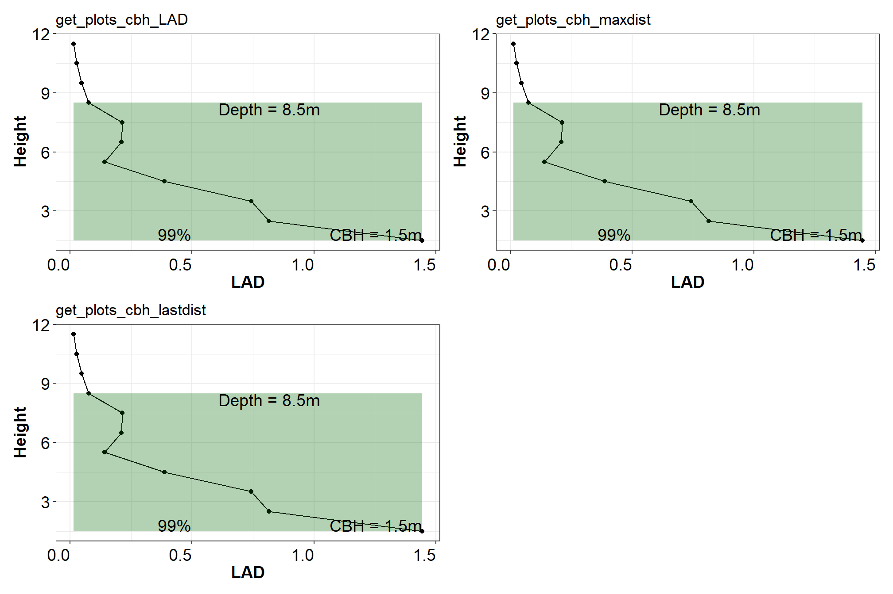
these plots represent the three criteria to define the CBH in a segmented tree:
get_plots_cbh_LAD= the fuel layer containing the maximum LAD percentage (column namedmaxlad_Hcbh)get_plots_cbh_maxdist= the fuel layer located at the highest distance (column namedmax_Hcbh)get_plots_cbh_lastdist= the fuel layer separated by the last effective distance (column namedlast_Hcbh)